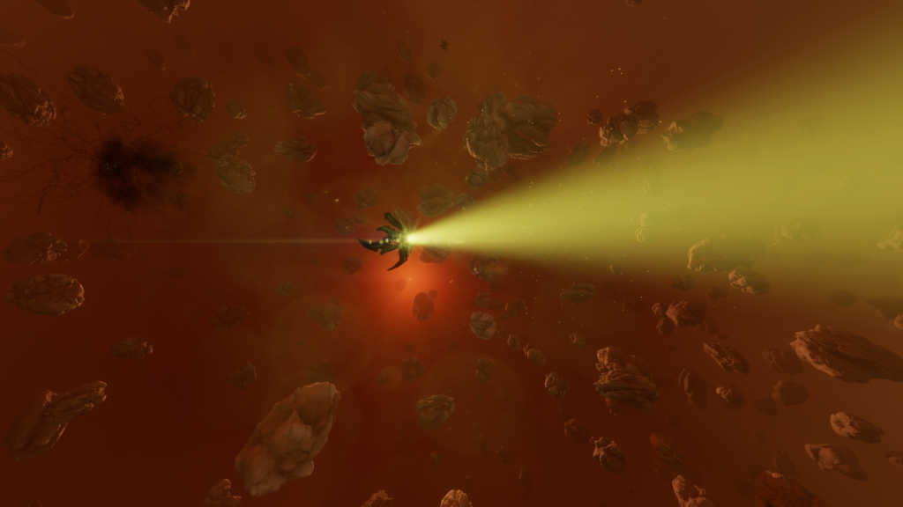
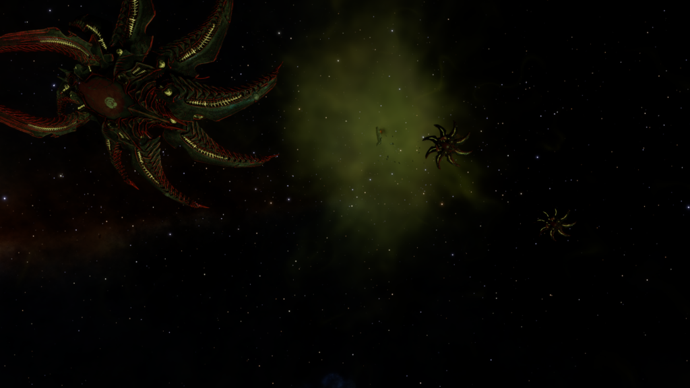

On May 18th 3309 the Second Thargoid War took an unexpected turn, when pilots first entering the heavily protected core of the Thargoid Maelstroms were confronted by a multitude of revelations. The first was the presence of asteroids inside the Maelstrom core, followed by a colossal ‘structure’ located in the centre of the asteroid field, later named a Thargoid Titan.
Patrolling the areas around the Titans was a new type of never before seen Thargoid vessel later named as the Glaive, with its later observed behaviour earning it the classification of Thargoid Hunter.
Later, a few months after the Glaive was discovered, disturbing reports were being given by Conflict Evacuation Force pilots, speaking of Thargoid vessels approaching their ships and ripping apart their hull to harvest the refugees, marking the reveal of the newest Hunter, the Scythe.
The Hunters are small craft roughly 50% larger than a Thargoid scout, with a distinctive appearance of eight “bladed” appendages spreading from a central module much in the same way an Interceptor has petals extending from its core. The Glaive is identified by having four large and four small blades, while the Scythe possesses eight equally sized blades.
On sensors, the Hunters share the same icon as an Interceptor, a double circle. Glaives will announce their presence with a unique warcry and music, while Scythes prefer to not announce their presence unless you are carrying passengers or escape pod cargo.
Another method of identifying the Glaive is to observe their speed, the craft will rapidly close in on their target.
The Glaive utilises four different types of weaponry:
First is a main cannon similar to that of an Thargoid Interceptor, caustic energy projectiles are rapidly fired from an area on the core of the ship, dealing minor phasing damage through shields and high penetrating damage to modules.
The next weapon the Glaive has access to is a barrage of caustic missiles that are launched in groups of four outwards from the larger of the bladed appendages, initial testing has found that Glaive caustic missiles possess a power between that of Scout and Interceptor caustic missiles.
Third is a weapon familiar to veteran Xeno combat pilots, the ‘lightning’ attack, the effects of this lightning are similar to Interceptor lightning attacks, slowing and damaging the target as while potentially causing modules to overload and reboot.
The fourth weapon available to the Glaive is arguably the most dangerous, similar to a weapon developed by Yuri Grom, the Glaive is capable of firing a missile that will disable the Frame Shift Drive of the impacted ship for 20 seconds. These missiles are extremely difficult to avoid as they jitter erratically while flying 500m/s until they close in to their target, where they switch to direct flight and travel over 700m/s
The Scythe has three forms of weaponry and two analogues to human Limpets:
First is two low-power, by Thargoid standards, rapid-firing twin cannons that uniquely deal no ophasing damage through any shielding present.
Second it is equipped with a lightning attack just like its more aggressive brethren.
Third is a FSD Reboost missile also seen on the Glaive.
The Scythe’s latter two forms of “weaponry” are the most disturbing. Upon arrival into an area, the Scythe deploys a small group of drones not unlike the Interceptor’s Thargons. These drones however have one unique purpose each. Breach drones sole purpose is to attach to your ship and rip holes in the hul to expose the escape pods. Which then the Collection drones then pick up and carry back to their mothership.
The Thargoid Hunters are an unusual design of ship compared to already observed Thargoid types, they enjoy firepower and abilities similar to the Interceptor classes, yet much like the smaller Scout class vessels, the Hunters retain no Thargoid Hearts, providing them no way of healing injuries sustained in battle.
In spite of its lack of Thargoid Hearts, the Glaive does possess a strange form of shield. During the previously mentioned lightning attack, the Glaive uses an as yet unknown mechanism to generate its shield while performing the lightning attack, this shield is near-invulnerable while the lightning is striking but is quite weak in terms of strength, falling quickly to most forms of weapons fire.
Another startling discovery during initial skirmishes was the apparent ability of the Glaive to generate an guardian-corrosion field, similar to those found in the systems of Maelstroms and the site of the Proteus disaster, HIP 22460
The Glaive is also not adverse to using its superior agility and speed as a defensive measure, attempting to close the distance to a Glaive-class vessel will result in the Hunter flying past your ship and activating its lightning, paralysing you facing away from it.
Scythes by comparison are fragile combatants, they retain only moderate armour protection and do not appear to have a shield, but have demonstrated speed and agility similar to a Glaive, however they rarely travel alone. They have been seen in groups of 1-4 and are almost always escorted by other Thargoid vessels, including Interceptor classes. The only reports of lone Scythes engaging ships have occurred outside Thargoid controlled space, with the Scythe seemingly entering human territory just to hunt down and abduct people from ships.
The Hunters are dangerous and unpredictable members of the Thargoid combat caste. They bear the unique ability among Thargoid Ships to remain accurate while its target is ‘running cold’ and with high relative speed. Due to this, initial theories suggested that these new vessels have been specifically designed by the Thargoids to defeat the method of combat known as ‘cold orbiting’ where human ships fly in circles around Thargoid craft while using cooling techniques, causing the Thargoid’s weapons to miss, due to their reliance on using heat as a detection source.
During combat, the Glaive displays a startling intelligence of human flight patterns, as it will change its course to intercept your flight path should you be trying to escape or manoeuvre around it, the Glaive will fly to where you will be rather than where you are. It will use this intelligence along with its superior engine performance in an attempt to prevent pilots from gaining more than 1km in distance, while also trying to stay behind its target to avoid retaliation fire.
Additionally, the more damage a Glaive takes to its hull, the more aggressive it becomes, lower percentages of hull will cause the Glaive to fire barrages of caustic missiles in rapid sequence, along with the Glaive closing for lightning attacks more often to grant itself a shield.
While rare, it is possible to see the Glaive in a non-combat state, inside the core of Maelstroms, the vessel seems to perform roles similar to that of a patrol craft, navigating in a wide circular motion around the Titan, while occasionally stopping to scan nearby Caustic Seed Mines or departing/returning Interceptor classes. Occasionally these vessels can be seen leaving the Titan and waking out to unknown locations.
Scythes contrarily, do not appear interested in engaging in combat, they will defend themselves when attacked using their repeater cannons, but seemingly prefer to grab the escape pods and retreat from the battle under the cover of their escorts. The Scythe Hunters can rarely be seen entering the core of a Maelstrom, arriving at the Titan inside and entering through The Maw. These arriving Hunters often appear damaged, and are always carrying a large stockpile of escape pods inside them, destruction of the Scythes while they are returning will release the captured escape pods, but provoke the wrath of the Titan and its defenders.
The potential defenses against the Hunters differ depending on the sub-class, defending against the Glaive will rely primarily on being able to either survive long enough to wake out, or facing the Glaive in combat until one of you is destroyed. While the Scythe doesn’t have access to the caustic missiles and houses a weaker main armament, it should not be underestimated.
Simply running away from the Hunters in normal space is not usually an option, due to the craft having such a high speed that they will catch all but the fastest of their victims, the Glaive has been observed to travel roughly 600m/s under ‘thrust’ with the capability to achieve near-unlimited velocity when pursuing a distant target. While the Scythe seemingly possesses the same engine power, it can be distracted by stopping to pick up dropped escape pods.
High-Waking is the only option for escape for all but “the big 3” (Anaconda, Imperial Cutter, Federal Corvette) and the T-10, as the Hunter subset possess a Mass Lock Factor of 20, disrupting all ships that are not 4 above.
The FSD reboot missile, while fast-moving, is the first known instance of Thargoid technology that can be deflected with the ECM module. There is a window where the ECM will work, and that is only during the missile’s erratic flight phase; once the missile enters terminal guidance and flies straight, the ECM is ineffective. The FSD missile appears to be based on a timer rather than a trigger, so begin charging your FSD as soon as it comes online.
Both the Glaive and Scythe will produce their own unique scream when approaching for a lightning attack.
Due to the Glaive’s ability to generate an anti-guardian field, guardian hybrid weapons are ineffective and its speed and agility make getting consistent missile hits impossible, so the best option is to use Gimballed or Turreted Anti-Xeno Multi Cannons while attempting to keep a decent distance from the Glaive. Don’t even try to attack their shield if you are caught in lightning, it regenerates too quickly.
Scythes lack the protective shield of the Glaive, contain no method of repairing themselves and more importantly do not possess the anti-guardian field, making it a slightly easier fight
With a decently strong shield, the best option is to put as many pips into the SYS caWith a decently strong shield, the best option is to put as many pips into the SYS capacitor as you can free up and the remainder into WEP, as your engines are a non-factor against the Hunters speed. If running without a shield, maximise pips to WEP and ENG allowing you to keep the fire on the Hunter and quickly manoeuvre if it moves behind you.
Despite their fearsome appearance and sounds, a lone Glaive-class Hunter deals only moderate damage if in an AX fitted ship, staying calm under pressure is your best chance of survival.
The Scythe is less of a threat to moderately armoured ships, but shows a startling ease of tearing through shields. With the Scythe’s main interest being any passengers or human cargo in the hold of a ship, they are usually content to shoot until your shields are down then send their drones to extract and collect the pods. Should you choose to fight the Scythe, it is much easier due to its lack of shield and no anti-guardian field. However, as mentioned before, Scythes are rarely encountered alone.
| Cruise Speed | 750 m/s |
| Boost Speed | 1000+ m/s |
| Hull HP | 750 |
| Armor Hardness | 90 |
| Non-AX Resistance | 92.857% |
| Shield Strength | 420 MJ |
| Shield Decay | 25 MJ/s |
| Shield Resistances | -20% Thermal / 50% Explosive / 40% Kinetic / -20% AX |

| Cruise Speed | 750 m/s |
| Boost Speed | 1000+ m/s |
| Hull HP | 800 |
| Armor Hardness | 90 |
| Non-AX Resistance | 99.97% |
| Shield Strength | N/A |
| Shield Decay | Yes |
| Shield Resistances | -100% – Existing |

Credits: Thanks to CMDR Firehawk8984 and CMDR Aleks_Zuno